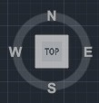
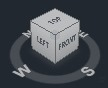
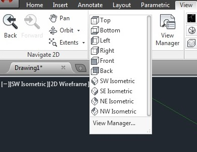

Лекция 4: Просмотр чертежей. Виды и видовые экраны в AutoCAD
В данном уроке будут описаны способы просмотра чертежей а так же виды и видовые экраны. При создании чертежа, не редко происходит так, что отображаемого рабочего поля не достаточно для того что бы разместить все элементы, и для того что бы масштаб чертежа остался прежним используют систему просмотра чертежей. А использование видов и видовых экранов крайне необходимо при создании 3D моделей, в тех случаях когда необходимо изменять отображаемые проекционные виды, а так же при просмотре объемной модели.
Просмотр чертежей
В системе AutoCAD чертежи создаются с использованием реальных размеров объектов. Детальный просмотр любых элементов чертежа осуществляется рядом команд ZOOM (зумирование), PAN (панорамирование), VIEV (вид).
Изменение масштаба чертежа
Зумирование (ZOOM)
Способы ввода команды:
Набрать на клавиатуре команду: ZOOM
Вызов из меню: View>Zoom
Кнопки на видовой панели
После ввода команды система предлагает выбрать одну из опций:
[All/Center/Dynamic/Extents/Previous/Scale/Window/Object]
Realtime – режим динамического приближения или отдаления вида чертежа относительно его центра на экране. Что бы приблизить чертеж, зажмите ЛКМ и перетащите курсор вверх, а что бы отдалить чертеж, зажмите ЛКМ и перетащите курсор вниз.
Previous – отмена этапов зумирования. Выбор опции отменяет последнюю команду зумирования и возвращает предыдущий вид чертежа.
Window – этот метод зумирования позволяет выделить на экране часть чертежа которую необходимо рассмотреть детальней. Прямоугольная рамка, задается точками, которые являются вершинами противолежащих вершин прямоугольника. Что бы ее задать, наведите курсор на необходимую точку в рабочей области и нажмите ЛКМ. После чего перетащите курсор в противоположенную точку области. Вся выделенная вами область будет максимально увеличена.
Dynamic – При использовании данной опции, вид чертежа максимально отдаляется и курсор приобретает вид прямоугольника с крестом внутри. Все что попадает в прямоугольник будет приближено для просмотра. Что бы изменить размер прямоугольника нажмите ЛКМ и перетащите курсор вправо для увеличения прямоугольника или влево для его уменьшения. После этого наведите прямоугольник на необходимую для увеличения область и нажмите клавишу Enter.
Scale – Опция используется как для приближения , так и для отдаления чертежа. Значение масштаба чертежа вводится в командной строке как целое или как дробное число, или записывается число, которое показывает во сколько раз изменить масштаб чертежа – 2х,3х, 0.5х.
Center – Опция позволяет центрировать изображение относительно указанной точки и задать коэффициент увеличения масштаба.
Object – Увеличение на весь экран одного или нескольких выбранных объектов.
In – При каждом нажатии, чертеж приближается в два раза.
Out – При каждом нажатии, чертеж отдаляется в два раза.
All – опция используется для максимального отдаления чертежа и показывает весь рабочий лист для создания чертежей. Метод достаточно удобный для просмотра очень больших чертежей. Но чертежи отдаляются настолько далеко что на них плохо различимы мелкие детали.
Extents – Такой метод зумирования, размещает в пределах рабочей области все объекты, которые нарисованы на чертеже. При этом он растягивает их на максимальную ширину или высоту.
Перемещение чертежа
Панорамирование (PAN)
Способы ввода команды:
Набрать с клавиатуры команду: PAN
Вызов из меню View>Pan
Кнопка на видовой панели
Команда панорамирования используется для перемещения чертежа без изменения его размера. Это позволяет пересмотреть ранее скрытые части чертежа.
Виды и видовые экраны.
Для удобного и быстрого изменения видового экрана в новых версиях AutoCAD используется видовая панель. В которой при помощи модуля Гизмо Бокс пользователь может выбрать один из стандартных проекционных и аксонометрических видов, а так установить свой собственный вид.
 Так же изменения видов возможно через панель View, расположенную в одноименном меню.
На этом уроке мы заканчиваем раздел «Знакомство со средой AutoCAD» и переходим к изучению основ работы с двухмерными моделями в AutoCAD.